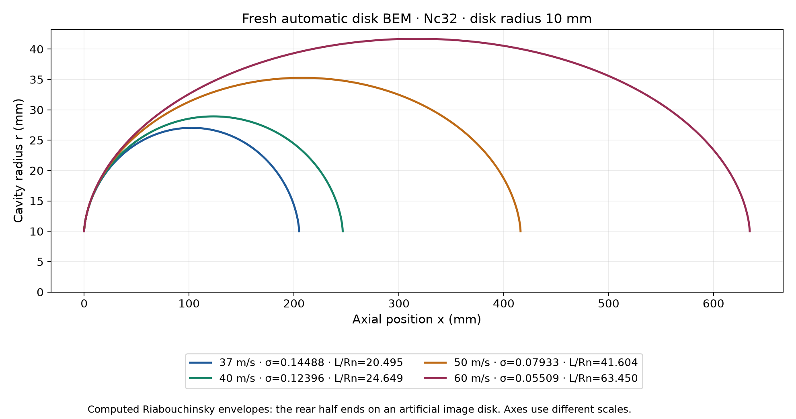
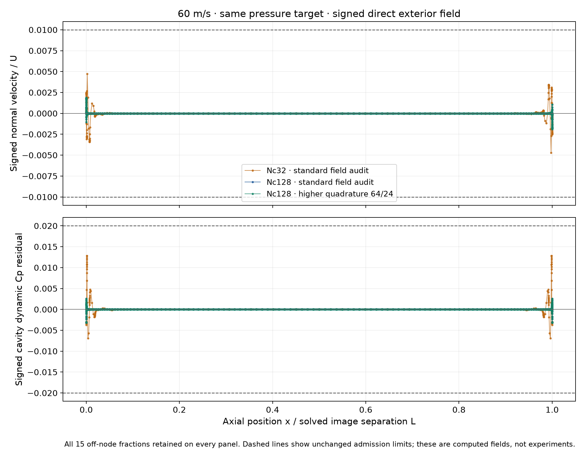

Disk BEM: automatic expansion of the pressure-target bracket
Wrapper 0.1.1-automatic-bracket, unchanged C1 core 0.3.0-c1-reviewed-guards. Increasing speed lowers the supplied cavitation number. The former fixed L/Rn=2–24 search could reject a target even when the same equations and field screens admit a longer envelope.
The default search now starts with fresh 2 and 24 endpoints, tries a fresh 48 only when required by their actual residuals, then 80 if required. Each added solve counts toward the scalar budget. The final result still requires a separate fresh 15-fraction exterior-field audit.
Measured cases 37–60 m/s pass the reported checks; accuracy remains unqualified. The rear disk is an artificial Riabouchinsky closure. These calculations do not validate natural cavity length, volume, reattachment or experimental agreement. Targets beyond the tested numerical bounds remain unadmitted.
Fresh native results
All use disk radius 10 mm, p∞ = 101325 Pa absolute, pc = 2339.19 Pa and density 998.158 kg/m³. No flow targets or source equations were tuned. No cached results or external warm states were used.
| Speed (m/s) | Nc | Targetσ | L/Rn | σ residual | Max |normal/U| | Max |dynamic Cp residual| | Seconds |
|---|---|---|---|---|---|---|---|
| 37 | 32 | 0.14487725 | 20.49543 | 4.838e-9 | 0.007067 | 0.016007 | 5.482 |
| 40 | 32 | 0.12396060 | 24.64921 | 7.419e-6 | 0.007854 | 0.016597 | 4.447 |
| 50 | 32 | 0.07933478 | 41.60372 | 5.817e-6 | 0.007267 | 0.012744 | 4.720 |
| 60 | 32 | 0.05509360 | 63.45013 | 4.344e-6 | 0.004715 | 0.012819 | 4.926 |
| 60 | 128 | 0.05509360 | 63.43682 | 4.237e-6 | 0.001873 | 0.003135 | 78.612 |
Every row passes target tolerance 10−5, nodal tolerance 10−10, geometry, max-normal 0.01 and max-dynamic-Cp 0.02 checks. 37 m/s uses the original bracket; 40 and50 m/s need the48 probe; 60 m/s needs 48 and 80. Native timings are not browser runtime claims.

Resolution and direct-field checks
The independently initialized60 m/s Nc128 search also passes. Compared with Nc32, separation changes by−0.02098%, maximum radius by−0.01870%, full-envelope volume by−0.05831% and direct disk drag by−0.03880%. This is a two-resolution sensitivity check, with no mesh-convergence qualification. Higher64/24 field quadrature on the same solved states changes reported maxima by less than8×10−11; both remain within the unchanged screens.

Preserved failures and remaining range
The explicit legacy-bounded 40 m/s calculation retains the old rejection after two fresh endpoints. Automatic expansion accepts the identical flow after a fresh 48 probe. The37 m/s outputs are bitwise identical to the previous wrapper in nodes, solution state, complete field audit, separation, sigma, radius, drag and volume.
80 m/s remains unresolved by this domain: target σ=0.03099015 is below the lowest fresh endpointσ=0.04501487 at L/Rn=80. 10 m/s also remains unresolved: target σ=1.98336957 is above the fresh L/Rn=2 endpoint σ=0.99697616. Both are returned as numerical domain exhaustion. This does not establish physical absence of a cavity, monotonicity or uniqueness. No extension beyond 80 or below 2 is included.
Beyond 80: exploratory guard-only probes remain rejected
A separate source copy changed only the upper length guard and its diagnostic text. At L/Rn=160, Nc32 closes the nodal equations but fails max-normal 0.0224974 and dynamic-Cp 0.0318446 limits. Nc128 still fails max-normal 0.01360815. Re-auditing that same Nc128 geometry, density and state with higher 64/24 quadrature gives max-normal 0.01276474, which still fails, while dynamic-Cp 0.01707321 passes. All 15 fractions are retained.
These probes are outside production. Removing the 80 bound without resolving the field residuals is not validated by this evidence. The high-sigma side also retains the numerical lower bound L/Rn=2. Exact guard changes, source hashes, full failed records and audit summary.
Reproducible records
The default strategy is automatic even when the former extended-domain checkbox is false. Explicit lengthStrategy:'legacy-bounded' reproduces the old2–24 search; the true legacy hint keeps direct2–80 initialization. Requested and effective strategy, tested domain, expansion evidence, budgets and incomplete evaluations are retained.
Versioned numerical benchmark · Summary CSV · Method, limits and reproduction · Bitwise and quadrature checks · 20 control checks · 12 independent control checks · Reproduction script · SHA256 manifest.
Full compressed raw JSON, complete shape samples and signed field CSVs are linked by the benchmark and manifest. 32 synthetic control checks verify implementation behavior; they are not physical-validation experiments. All mesh and experimental accuracy flags remain false.